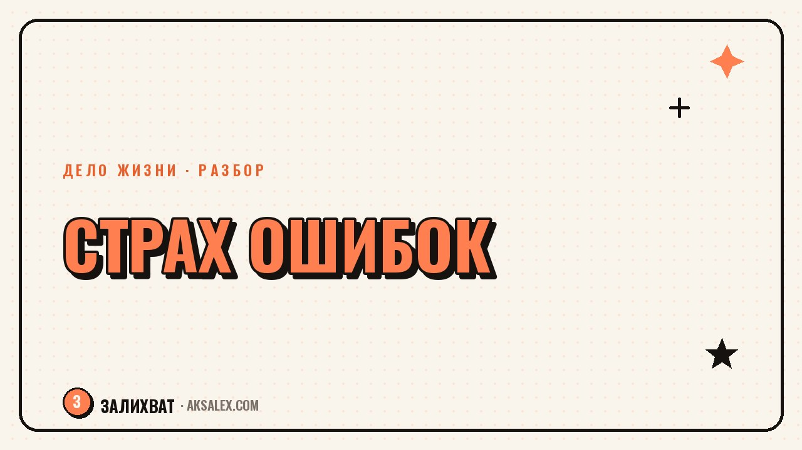

Как перестать бояться ошибок и начать делать

Ты откладываешь разговор с начальником, черновик текста, первый пост в новом деле - не потому что не знаешь, что делать, а потому что боишься сделать это неправильно. Страх ошибок часто маскируется под перфекционизм или занятость, хотя на деле это просто страх, который откладывает действие на потом. Разберём, откуда он берётся и что реально помогает начать делать, а не бесконечно готовиться.
Откуда берётся страх ошибок
Страх ошибиться редко возникает из ничего - обычно за ним стоит конкретный опыт: резкая критика в детстве или на прежней работе, ситуация, где одна ошибка стоила слишком дорого, или среда, где промахи публично разбирали, а успехи считали нормой. Мозг запоминает такие эпизоды и в похожих ситуациях включает тревогу заранее, ещё до того, как что-то реально пошло не так.
Проблема в том, что эта защитная реакция срабатывает не только в действительно рискованных ситуациях, но и там, где цена ошибки на самом деле невысока - в черновике текста, в пробной версии продукта, в первом разговоре с новым клиентом. Страх не различает масштаб риска, он просто включается по знакомому сценарию.
- Резкая критика в прошлом за похожие действия
- Ситуация, где одна ошибка привела к серьёзным последствиям
- Среда, где принято обсуждать промахи, но не успехи
- Завышенные ожидания к себе, не соотнесённые с реальным опытом
Как страх ошибок маскируется под другие вещи
Перфекционизм
Бесконечная доработка черновика, который давно готов к тому, чтобы его показать, часто не про высокие стандарты, а про страх услышать, что что-то не так. Пока текст не отправлен, ошибку в нём никто не найдёт.
Занятость подготовкой
Ещё один курс, ещё одна книга, ещё одна консультация перед тем, как начать - иногда это действительно нужная подготовка, а иногда способ отложить момент, когда придётся столкнуться с возможной неудачей на практике.
| Как выглядит | Что на самом деле происходит | Что помогает |
|---|---|---|
| Бесконечные правки черновика | Страх показать несовершенный результат | Установить дедлайн и показать как есть |
| Откладывание разговора | Страх услышать отказ или критику | Сформулировать конкретную первую фразу |
| Постоянное обучение без практики | Страх первой реальной попытки | Начать с маленькой, безопасной задачи |
Что реально помогает: практика, а не мотивация
Снизь цену первой попытки
- Найди самый маленький вариант действия, который можно сделать за один день
- Спроси себя: что случится в худшем случае, если это не получится с первого раза
- Покажи черновик одному человеку, а не сразу всем
- Дай себе разрешение на «пробную версию», а не финальный результат
Уверенность не появляется до того, как начать действовать - она появляется после нескольких попыток, часть из которых окажется неудачной.
Это ключевой момент, который часто путают местами: ждать, пока пройдёт страх, чтобы начать - тупиковый путь, потому что страх снижается именно от накопленного опыта действий, а не от размышлений о них.
Как относиться к уже случившейся ошибке
Когда ошибка уже произошла, полезно разделить два вопроса: что пошло не так технически и что это значит про тебя как про человека. Первое - конкретная проблема, которую можно разобрать и исправить. Второе - обычно преувеличение, которое мозг достраивает сам, без реальных оснований.
Разбор ошибки по существу выглядит просто: что конкретно произошло, что привело к этому, что сделать иначе в следующий раз. Без этого разбора ошибка ничему не учит, а просто оставляет неприятное чувство и укрепляет страх повторения.
- Опиши ошибку фактами, без оценочных слов вроде «я всё испортила»
- Найди одну конкретную причину, а не общее «я недостаточно хороша»
- Сформулируй одно изменение на следующий раз, а не список из десяти пунктов
Как начать, если страх всё ещё есть
Страх не обязательно должен полностью исчезнуть перед первым шагом - достаточно, чтобы действие стало чуть больше страха. Для этого работает принцип маленького шага: не «запустить дело», а «отправить первое сообщение потенциальному клиенту сегодня».
Через несколько таких маленьких шагов страх не исчезает волшебным образом, но перестаёт быть единственным, что определяет твои решения - рядом появляется реальный опыт, который тоже имеет право голоса.
Частые вопросы
Почему я боюсь ошибок сильнее, чем другие люди вокруг?
Скорее всего, у тебя был конкретный опыт, где ошибка привела к серьёзным последствиям или резкой критике, и мозг запомнил этот сценарий. Дело не в характере, а в накопленном опыте, с которым можно постепенно работать.
Как перестать бояться ошибок на работе?
Начни с маленьких, обратимых действий и заранее реши, что случится в худшем случае, если что-то пойдёт не так. Обычно цена ошибки в голове оказывается сильно преувеличена по сравнению с реальными последствиями.
Что делать, если страх ошибки мешает начать новое дело?
Найди самый маленький первый шаг, который можно сделать за один день, вместо того чтобы готовиться месяцами. Уверенность приходит после нескольких попыток, а не до них.
Как отличить перфекционизм от страха ошибок?
Часто это одно и то же под разными названиями: бесконечная доработка результата обычно означает не высокие стандарты, а страх показать несовершенную версию. Помогает установить конкретный дедлайн и показать работу как есть.
Как правильно разбирать уже случившуюся ошибку?
Отдели факт произошедшего от оценки себя как человека и опиши ситуацию без слов вроде «я всё испортила». Найди одну конкретную причину и одно изменение на следующий раз - этого достаточно, чтобы ошибка чему-то научила.
Раз тема оказалась полезной, вот что почитать следующим. Разбираем синдром самозванца без эзотерики: откуда он берётся и что с ним реально делать.
Читать статью →а не вручную